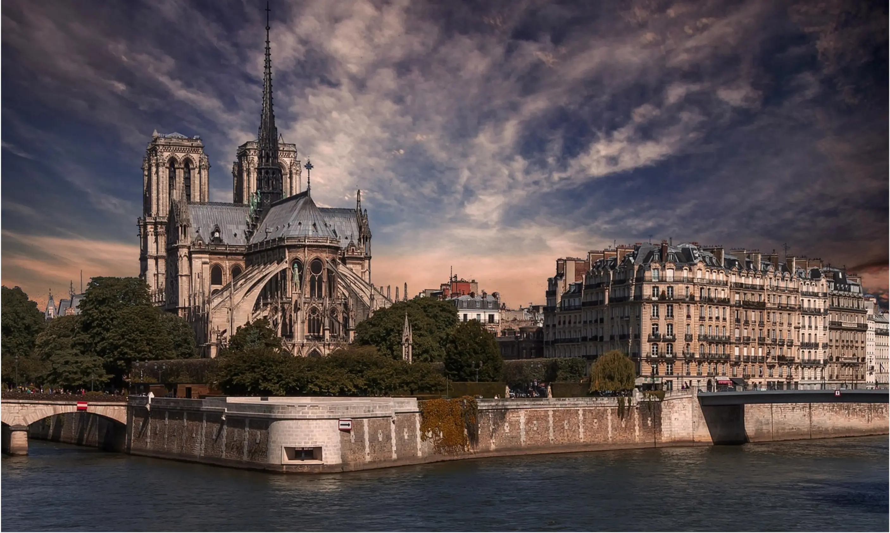

Notre Dame & Île de la Cité: An In-Depth Guide

For over 850 years, Notre-Dame de Paris has been a silent witness to history, a masterpiece of Gothic architecture, and a spiritual heart for France and the world. This guide delves into its intricate structure, its treasured contents, and the timeless stories etched into its very fabric. Explore the details that make this cathedral an icon of human faith and artistry, all from its historic home on the Île de la Cité.
Our Lady of Paris: An Architectural Breakdown
The facade of Notre Dame is a stone bible, rich with symbolism and revolutionary engineering. The interactive diagram below allows you to explore its key features. Click on a highlighted area of the schematic to reveal its story and significance.
Interactive Architecture Explorer
Select a Feature
Information about the selected architectural element will appear here.
Stories & Legends
The Hunchback of Notre-Dame
Victor Hugo's 1831 novel, featuring Quasimodo and Esmeralda, cemented the cathedral's place in popular culture and sparked a national interest in preserving Gothic architecture.
The Blacksmith's Pact
Legend says the intricate ironwork on the side doors was so complex that the blacksmith, Biscornet, made a pact with the devil. The main door's lock only worked after being sprinkled with holy water.
Facts & Figures
Gargoyles vs. Chimeras
Gargoyles are functional waterspouts. Chimeras, the famous monstrous statues, are purely decorative and were added during the 19th-century restoration.
The 2019 Fire & Rebirth
The April 15, 2019 fire sparked a global restoration effort. The cathedral is scheduled to reopen in December 2024, a symbol of resilience.
Île de la Cité: The Cradle of Paris
Long before the Eiffel Tower, there was this island. The Île de la Cité is the historical epicenter of Paris. This interactive map highlights key landmarks that, along with Notre-Dame, tell the story of the city.
Explore the Island
Click a landmark on the map to learn about its history.
A Journey Through Time
This timeline highlights pivotal moments in the history of Notre-Dame and Île de la Cité, while the chart below visualizes the monumental effort of the cathedral's initial construction.
c. 52 BC
Roman forces conquer the Celtic settlement of Lutetia on the Île de la Cité.
1163
Bishop Maurice de Sully lays the first stone of Notre-Dame Cathedral.
1345
Construction of Notre-Dame is officially completed.
1790s
During the Revolution, the cathedral is desecrated and rededicated to the "Cult of Reason."
1844-1864
Architect Viollet-le-Duc leads a major restoration, adding the iconic spire and chimeras.
2019
A catastrophic fire destroys the spire and roof, prompting the current restoration project.
Visualizing Construction: 1163-1345
Explore Nearby Eateries
The area around Notre-Dame is rich with culinary delights. Use the filters below to discover a selection of dining spots in the historic Latin Quarter and on the island itself.